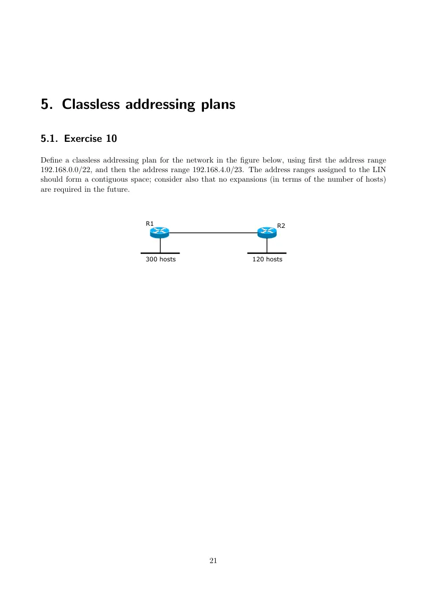
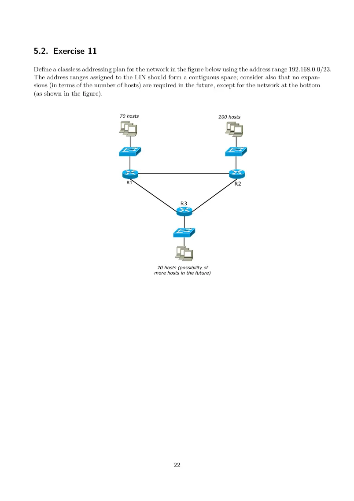
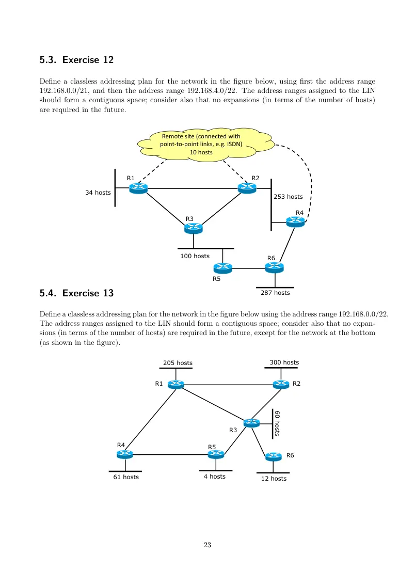
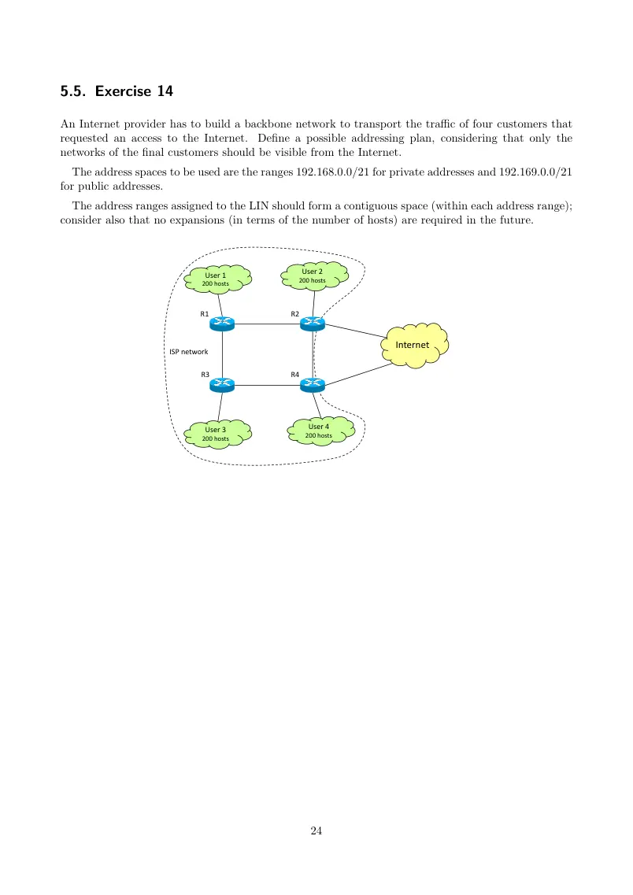
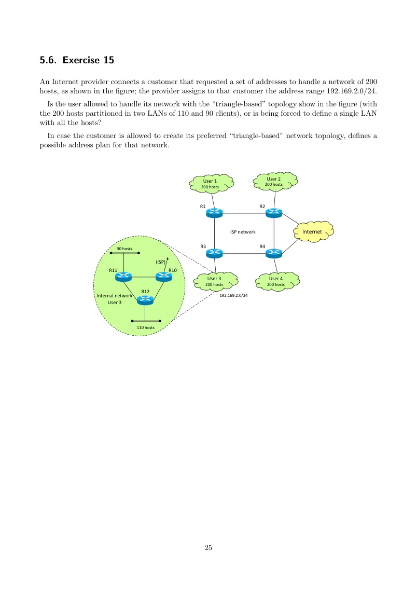

Classless addressing plans · প্রতিটি প্রশ্নের নিচে মূল PDF পৃষ্ঠার ছবি ও solution page reference রয়েছে।
প্রথমে 192.168.0.0/22 এবং পরে 192.168.4.0/23 ব্যবহার করে classless addressing plan তৈরি করো। Network block-গুলো contiguous হবে; ভবিষ্যৎ host expansion প্রয়োজন নেই।
রেফারেন্স: Exercises on IP Addressing, PDF p. 21

192.168.0.0/22-এর জন্য PDF: 300 hosts → 192.168.0.0/23; 120 hosts → 192.168.2.0/25; P2P → 192.168.2.128/30. 192.168.4.0/23-এর জন্য 300-host LAN-কে দুই subnet-এ ভাগ করে 192.168.4.0/24 + 192.168.5.128/26; 120 hosts → 192.168.5.0/25; P2P → 192.168.5.192/30।
| Available block | 300-host LAN | 120-host LAN | Point-to-point |
|---|---|---|---|
| 192.168.0.0/22 | 192.168.0.0/23 | 192.168.2.0/25 | 192.168.2.128/30 |
| 192.168.4.0/23 | 192.168.4.0/24 + 192.168.5.128/26 | 192.168.5.0/25 | 192.168.5.192/30 |
192.168.0.0/23 address range ব্যবহার করে classless addressing plan তৈরি করো। Address block-গুলো contiguous হবে; নিচের 70-host network ছাড়া অন্য network-এ future expansion প্রয়োজন নেই।
রেফারেন্স: Exercises on IP Addressing, PDF p. 22

PDF-এর সমাধান অনুযায়ী বড় block আগে বরাদ্দ করতে হবে এবং নিচের LAN-এর ভবিষ্যৎ বৃদ্ধি বিবেচনায় অতিরিক্ত বড় block রাখতে হবে। পূর্ণ topology ও address assignment PDF-এর solution পৃষ্ঠার ছবিতে দেখানো হয়েছে।
| Network | Address block | Notes |
|---|---|---|
| 200 hosts | 192.168.0.0/24 | LAN |
| 70 hosts (R1 side) | 192.168.1.128/26 + 192.168.1.192/27 | Partitioned to save addresses |
| 70 hosts (future expansion) | 192.168.1.0/25 | Kept as one network for growth |
| Router links | 192.168.1.224/30, 192.168.1.228/30, 192.168.1.232/30 | Point-to-point links |
প্রথমে 192.168.0.0/21, তারপর 192.168.4.0/22 ব্যবহার করে classless addressing plan তৈরি করো। Address space contiguous হবে এবং ভবিষ্যৎ host expansion লাগবে না।
রেফারেন্স: Exercises on IP Addressing, PDF p. 23

প্রতিটি LAN-এর প্রয়োজনীয় host + router + network/broadcast address ধরে বড় subnet আগে বসাতে হবে। /21 block-এ সমাধান সম্ভব; 192.168.4.0/22-এর ছোট block-এ সব network fit করাতে PDF-এর সমাধানে network partition/পরিকল্পনা দেখানো হয়েছে। Exact topology mapping solution-page images-এ আছে।
| Hosts / network | 192.168.0.0/21 plan | 192.168.4.0/22 plan |
|---|---|---|
| 253 hosts | 192.168.0.0/23 | 192.168.0.0/24 + 192.168.3.16/29 (split in source figure) |
| 287 hosts | 192.168.2.0/23 | 192.168.1.0/24 + 192.168.2.192/26 (split in source figure) |
| 100 hosts | 192.168.4.0/25 | 192.168.2.0/25 |
| 34 hosts | 192.168.4.128/26 | 192.168.2.128/26 |
| 10 hosts remote | 192.168.4.192/28 | 192.168.3.0/28 |
| Router links | 192.168.4.208/30, .212/30, .216/30, .220/30, .224/30 | 192.168.3.24/30, .28/30, .32/30, .36/30, .40/30 |
192.168.0.0/22 address range-এর মধ্যে figure-এর network-গুলোর classless addressing plan তৈরি করো। Block-গুলো contiguous হবে; নিচের network ছাড়া future expansion প্রয়োজন নেই।
PDF-এর solution figure-এ বড় LAN-গুলোকে বড় block এবং ছোট LAN/point-to-point link-গুলোকে ছোট block দেওয়া হয়েছে। 300-host network-এর জন্য /23 দরকার; তাই প্রদত্ত /22-এর সীমার মধ্যে অন্য LAN-গুলো fit করানোর জন্য partitioning প্রয়োজন। বিস্তারিত address assignment solution image-এ আছে।
| Network | Address block |
|---|---|
| 300 hosts | 192.168.0.0/23 |
| 205 hosts | 192.168.2.0/24 |
| 60 hosts | 192.168.3.0/26 |
| 61 hosts | 192.168.3.64/26 |
| 12 hosts | 192.168.3.128/28 |
| 4 hosts | 192.168.3.144/29 |
| Router links | 192.168.3.152/30, .160/30, .164/30, .168/30, .172/30, .176/30 |
ISP backbone-এ চার customer-এর traffic বহন করার addressing plan তৈরি করো। Internet থেকে শুধু final customer network-গুলো visible থাকবে। Private block 192.168.0.0/21 এবং public block 192.169.0.0/21 ব্যবহার করো; প্রতিটি block-এর মধ্যে address allocation contiguous হবে।
রেফারেন্স: Exercises on IP Addressing, PDF p. 24

PDF-এর সম্ভাব্য সমাধানে customer network-গুলোর জন্য 192.169.0.0/24 থেকে 192.169.3.0/24 পর্যন্ত public /24 block এবং ISP/internal ও point-to-point link-এর জন্য ছোট /30 block ব্যবহার করা হয়েছে। Internet থেকে customer network-গুলোই দৃশ্যমান থাকবে।
| Purpose | Address block | Publicly advertised? |
|---|---|---|
| User 1 — 200 hosts | 192.169.0.0/24 | Yes |
| User 2 — 200 hosts | 192.169.1.0/24 | Yes |
| User 3 — 200 hosts | 192.169.2.0/24 | Yes |
| User 4 — 200 hosts | 192.169.3.0/24 | Yes |
| ISP internal router links | 192.168.0.0/30, .4/30, .8/30, .12/30 | No (private/internal) |
| ISP-to-Internet links | 192.169.4.0/30, 192.169.4.4/30 | Yes |
Provider customer-কে 192.169.2.0/24 দিয়েছে। Customer কি 110 ও 90 host-এর দুটি LAN-সহ triangle topology ব্যবহার করতে পারে, নাকি সব 200 host-কে একটি LAN-এ রাখতে হবে? অনুমোদিত হলে একটি address plan তৈরি করো।
রেফারেন্স: Exercises on IP Addressing, PDF p. 25

হ্যাঁ, /24 address space-টি customer-এর জন্য বরাদ্দ address pool; এটিকে একাধিক subnet-এ partition করা যায়। PDF-এর সমাধানে LAN-গুলোর জন্য 192.169.2.0/25, 192.169.2.128/26, 192.169.2.192/27 এবং router links-এর জন্য /30 block ব্যবহার করা হয়েছে।
| Purpose | Address block |
|---|---|
| LAN with 110 hosts | 192.169.2.0/25 |
| LAN with 90 hosts | 192.169.2.128/26 |
| Additional LAN / router-side segment shown in source | 192.169.2.192/27 |
| Router links | 192.169.2.224/30 and following available /30 blocks as shown in source topology |